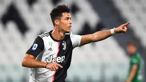
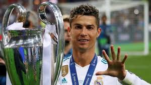
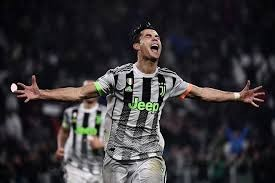
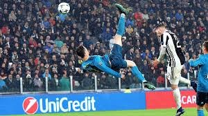
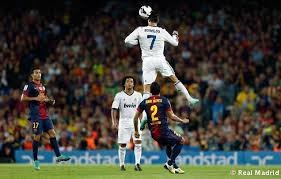
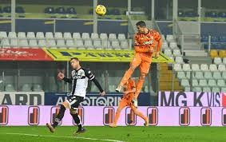
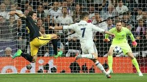
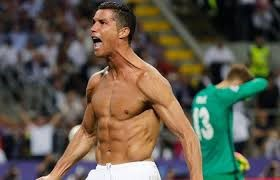
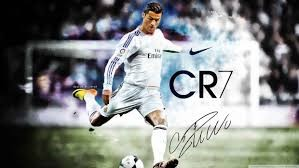

(Funchal, Madeira; 5 de febrero de 1985), más conocido como Cristiano Ronaldo, es un futbolista portugués que juega como delantero en la Juventus F. C. de la Serie A de Italia y en la selección de Portugal, de la cual es su capitán.
Cristiano Ronaldo dos Santos Aveiro nació en São Pedro, Funchal, en la isla portuguesa de Madeira, y creció en la área de Santo António, uno de los barrios más pobres de Portugal.50 Es el cuarto y más joven hijo del matrimonio entre Maria Dolores dos Santos Viveiros da Aveiro (n. 1953), una cocinera, y José Dinis Aveiro (1954-2005), un jardinero municipal y utilero.51 Su bisabuela paterna, Isabel da Piedade, era de la isla de São Vicente, Cabo Verde. Tiene un hermano mayor, Hugo (n. 1975) y dos hermanas mayores, Elma (n. 1973) y Liliana Cátia "Katia" (n. 1977), quien es una cantante.52 Su madre reveló que cuando estaba embarazada de él quería abortarlo, debido a la adicción al alcohol que tenía su padre, la mala situación económica de la familia y porque ya tenía demasiados hijos. Sin embargo, su médico se negó a realizar el procedimiento.53 Ronaldo se crio en una familia católica y en un hogar de malas condiciones, durmiendo en la misma habitación junto a todos sus hermanos.
---->EL MEJOR JUGADOR DE LA HISTORIA DEL FUTBOL<----
| CLUB/SELECCIÓN | GOLES | PARTIDOS | PROMEDIO |
|---|---|---|---|
| SPORTING | 5 | 31 | 0.16 |
| MANCHESTER UNITED | 118 | 292 | 0.40 |
| REAL MADRID | 450 | 438 | 1.03 |
| JUVENTUS | 99 | 128 | 0.77 |
| PORTUGAL | 100 | 164 | 0.60 |
| TOTAL | 766 | 1048 | 0.73 |

| AÑO | PREMIO |
|---|---|
| 2008 | BOTA DE ORO BALON DE ORO JUGADOR MUNDIAL DE LA FIFA |
| 2011 | BOTA DE ORO |
| 2013 | FIFA BALON DE ORO |
| 2014 | BOTA DE ORO FIFA BALON DE ORO |
| 2015 | BOTA DE ORO |
| 2016 | BALON DE ORO THE BEST FIFA |
| 2017 | BALON DE ORO THE BEST FIFA |
2020 | GOLDEN FOOT ONCE HISTORICO DEL BALON DE ORO JUGADOR DEL SIGLO |

La carrera del portugués está plagada de éxitos.
Cristiano Ronaldo no ha parado de levantar títulos allá donde ha estado. El jugador portugués sabe lo que es ser campeón tanto con el Manchester United como con el Real Madrid. Además, también gana con su selección. Y también con la Juventus, con quien ha levantado este miércoles su quinto título al quedarse con la Coppa Italia ante Atalanta.
En total, Ronaldo ya suma 34 estrellas a nivel de clubes y selección, pues ha conquistado 5 Champions League, 1 Eurocopa, 2 Liga de España, 2 Serie A de Italia, 3 Premier League, 1 UEFA Nations League, 2 Copa del Rey, 1 FA Cup / Copa de Inglaterra, 3 Supercopa de Europa, 2 Community Shield / Supercopa de Inglaterra, 2 Supercopa de España, 2 Supercopa de Italia, 1 Supercopa de Portugal, 4 Mundial de clubes, 2 Copa de la Liga de Inglaterra, 1 Coppa Italia.
Entre sus grandes logros, queda claro que sus conquistas en la Champions League lo ubican por encima de cualquier jugador contemporáneo. Con cinco trofeos en el bolsillo, ningún jugador de hoy llega a esa cifra, mientras que está a uno del récord de Paco Gento, el único con seis.

----->VIDA PERSONAL DE CR7<-----

